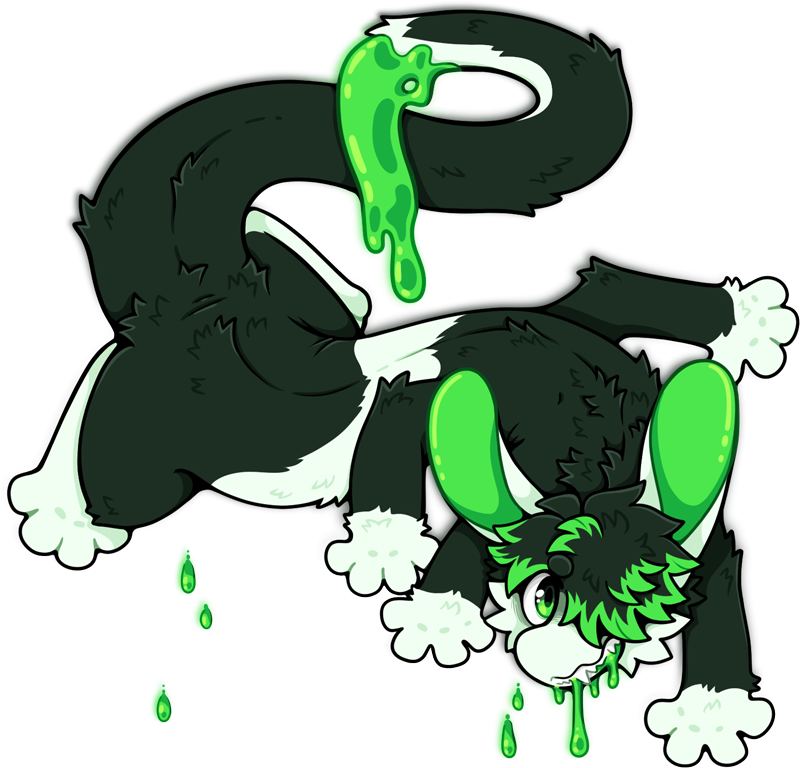

Websites and services we somewhat actively use and update.
For the more direct kind of communication.
These are legitimate, but passively or infrequently updated.
Sites we're on that are dead or dying.
Places that are pretty exclusively about beeps.
Profiles just for Olive when they're fronting.